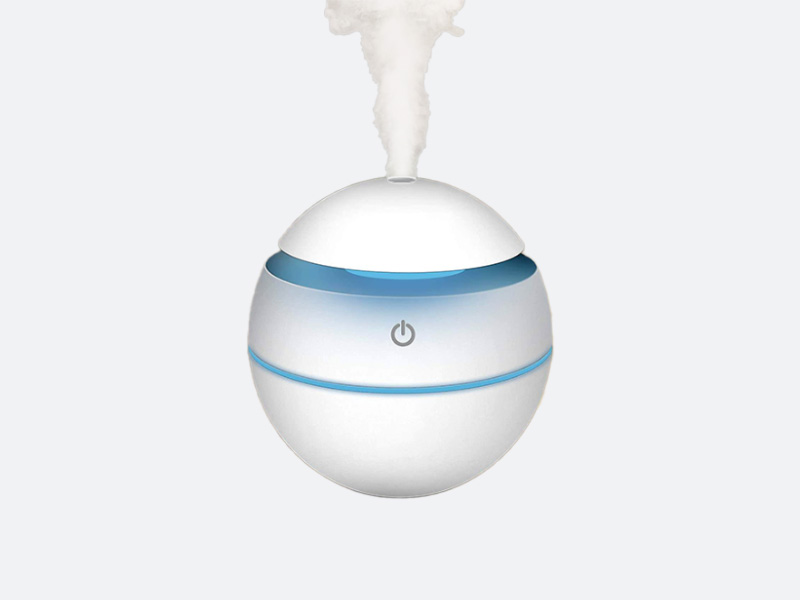

Solusi Kesehatan
Pembahasan Kesehatan Berdasarkan Kualitas Udara
Meningkatkan ventilasi, menggunakan purifier udara, dan mengurangi penggunaan bahan kimia berbahaya dapat membantu menjaga kualitas udara di dalam ruangan.
Bersepeda atau berjalan kaki tidak hanya meningkatkan kesehatan fisik tetapi juga mengurangi emisi kendaraan bermotor, membantu menjaga kualitas udara di perkotaan.
Pohon dapat menyerap polutan udara dan memberikan oksigen. Menanam lebih banyak pohon di perkotaan dapat membantu menyaring udara dan menciptakan lingkungan yang lebih bersih.
Teknologi sensor udara dan sistem pemantauan dapat membantu mengidentifikasi sumber polusi dan memberikan informasi real-time untuk pengambilan keputusan yang lebih baik dalam menjaga kualitas udara.
Mengurangi konsumsi energi, mengadopsi energi terbarukan, dan mendukung gaya hidup berkelanjutan dapat membantu mengurangi emisi gas rumah kaca dan meningkatkan kualitas udara.
Perubahan iklim dapat memperburuk polusi udara dan meningkatkan risiko penyakit pernapasan serta dampak kesehatan lainnya, menjadikan mitigasi perubahan iklim sebagai bagian integral dari solusi kesehatan berbasis kualitas udara.
Produk Kesehatan
Produk Rekomendasi Kesehatan

Masker Wajah
Tipe Rekomendasi : KF94, KN95

Air Purifier
Web

Dehumidifier
App

Ventilasi Sistem HVAC
App

Humidifier
Web

Sterilisator Udara
App